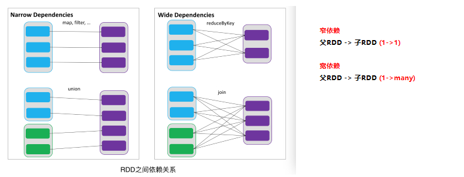

Apache Spark 是用于大规模资料处理的计算引擎
2. 基本概念
2.1. Spark 运作机制
2.2. RDD
RDD，全称为 Resilient Distributed Datasets（弹性分布式数据集），是一个容错的、并行的数据结构，可以让用户显式地将数据存储到磁盘和内存中，并能控制数据的分区，是一个无序的列表（ JVM对象），是不可变、只读的，被分区的数据集
2.2.1. RDD的特点
2.2.1.1. 弹性数据分区
Partition：数据分区，是指的spark在计算过程中，生成的数据在计算空间内最小单元。即一个RDD数据集可以划分为多少个数据分区。同一份数据（RDD）的partition 大小不一，数量不定，是根据application里的算子和最初读入的数据分块数量决定的，这也是为什么叫“弹性分布式”数据集的原因之一。（在内存）

如图所示RDD_1含有5个partition 分区（p1、p2、p3、p4、p5），分别存储在4个节点（Node1、node2、Node3、Node4）中。RDD_2含有3个分区（p1、p2、p3），分布在3个节点（Node1、Node2、Node3）中。
RDD分区的一个分区原则是使得分区的个数尽量等于集群中的CPU核心（core）数目。
NOTE
Partition与block
hdfs中的block是分布式存储的最小单元，类似于盛放文件的盒子，一个文件可能要占多个盒子，但一个盒子里的内容只可能来自同一份文件。假设block设置为128M，你的文件是250M，那么这份文件占3个block（128+128+2）。这样的设计虽然会有一部分磁盘空间的浪费，但是整齐的block大小，便于快速找到、读取对应的内容。（p.s. 考虑到hdfs冗余设计，默认三份拷贝，实际上3*3=9个block的物理空间。）
spark中的partition 是弹性分布式数据集RDD的最小单元，RDD是由分布在各个节点上的partition 组成的。partition 是指的spark在计算过程中，生成的数据在计算空间内最小单元，同一份数据（RDD）的partition 大小不一，数量不定，是根据application里的算子和最初读入的数据分块数量决定的，这也是为什么叫“弹性分布式”数据集的原因之一。
| HDFS block | RDD partition |
|---|---|
| block位于存储空间 | partition 位于计算空间， |
| block的大小是固定的 | partition 大小是不固定的， |
| block是有冗余的、不会轻易丢失 | partition（RDD）没有冗余设计、丢失之后重新计算得到 |
2.2.1.2. 只读
如下图所示，RDD是只读的，要想改变RDD中的数据，只能在现有的RDD基础上创建新的RDD。
2.2.1.3. 依赖
RDDs通过操作算子进行转换，转换得到的新RDD包含了从其他RDDs衍生所必需的信息，RDDs之间维护着这种血缘关系，也称之为依赖。如下图所示，依赖包括两种，一种是窄依赖，RDDs之间分区是一一对应的，另一种是宽依赖，下游RDD的每个分区与上游RDD(也称之为父RDD)的每个分区都有关，是多对多的关系。

2.2.1.4. 可缓存
如果在应用程序中多次使用同一个RDD，可以将该RDD缓存起来，该RDD只有在第一次计算的时候会根据血缘关系得到分区的数据，在后续其他地方用到该RDD的时候，会直接从缓存处取而不用再根据血缘关系计算，这样就加速后期的重用。如下图所示，RDD-1经过一系列的转换后得到RDD-n并保存到hdfs，RDD-1在这一过程中会有个中间结果，如果将其缓存到内存，那么在随后的RDD-1转换到RDD-m这一过程中，就不会计算其之前的RDD-0了。
2.2.1.5. 支持容错机制--checkpointing
RDD 对容错的支持
支持容错通常采用两种方式：数据复制或日志记录。对于以数据为中心的系统而言，这两种方式都非常昂贵，因为它需要跨集群网络拷贝大量数据，毕竟带宽的数据远远低于内存。
RDD 天生是支持容错的。首先，它自身是一个不变的 (immutable) 数据集，其次，它能够记住构建它的操作图（Graph of Operation），因此当执行任务的 Worker 失败时，完全可以通过操作图获得之前执行的操作，进行重新计算。由于无需采用 replication 方式支持容错，很好地降低了跨网络的数据传输成本。
不过，在某些场景下，Spark 也需要利用记录日志的方式来支持容错。例如，在 Spark Streaming 中，针对数据进行 update 操作，或者调用 Streaming 提供的 window 操作时，就需要恢复执行过程的中间状态。此时，需要通过 Spark 提供的 checkpoint 机制，以支持操作能够从 checkpoint 得到恢复。
针对 RDD 的 wide dependency，最有效的容错方式同样还是采用 checkpoint 机制。不过，似乎 Spark 的最新版本仍然没有引入 auto checkpointing 机制。
因为checkpoint后的RDD不需要知道它的父RDDs了，它可以从checkpoint处拿到数据。
2.3. RDD 操作
由一个RDD转换到另一个RDD，可以通过丰富的操作算子实现，不再像MapReduce那样只能写map和reduce了，如下图所示。
RDD逻辑上是分区的，每个分区的数据是抽象存在的，计算的时候会通过一个compute函数得到每个分区的数据。
- 如果RDD是通过已有的文件系统构建，则compute函数是读取指定文件系统中的数据，
- 如果RDD是通过其他RDD转换而来，则compute函数是执行转换逻辑将其他RDD的数据进行转换。
如果用户没有要求Spark cache该RDD的结果，那么这个过程占用的内存是很小的，一个元素处理完毕后就落地或扔掉了（概念上如此，实现上有buffer），并不会长久地占用内存。只有在用户要求Spark cache该RDD，且storage level要求在内存中cache时，Iterator计算出的结果才会被保留，通过cache manager放入内存池。
3. Spark Core 基本用法
Programming in Spark
1. 创建RDD,Create RDDs
2. 应用转换, Apply transformations
3. 执行，Perform actions
RDD，全称为 Resilient Distributed Datasets，是一个容错的、并行的数据结构，可以让用户显式地将数据存储到磁盘和内存中，并能控制数据的分区。
RDD 是不可变Java虚拟机（JVM）对象的分布式集合。我们使用python时候，尤其要注意，python数据是存储在JVM对象中的
3.1. Create RDDs
from pyspark import SparkContext SparkContext(master=None, appName=None, sparkHome=None, pyFiles=None, environment=None, batchSize=0, serializer=PickleSerializer(), conf=None, gateway=None, jsc=None, profiler_cls=<class 'pyspark.profiler.BasicProfiler'>) sc = SparkContext("local", "count app") # 1 从内存中读取并行集合 data = sc.parallelize( [('Amber', 22), ('Alfred', 23), ('Skye',4), ('Albert', 12), ('Amber', 9)]) # 2 从硬盘中读取 # 本地文件系统，HDFS，Cassandra，HBase，Amazon S3等。 Spark 支持文本文件(text files)，SequenceFiles 和其他 Hadoop InputFormat。 data_from_file = sc.textFile('/Users/drabast/Documents/PySpark_Data/VS14MORT.txt.gz',4) ## 4： Parallelize range output into 4 partitions
3.2. Apply transformations
| ransformation | Meaning |
|---|---|
| map(func) | 返回一个新的分布式数据集，将数据源的每一个元素传递给函数 func 映射组成。 |
| filter(func) | 返回一个新的数据集，从数据源中选中一些元素通过函数 func 返回 true。 |
| flatMap(func) | 类似于 map，但是每个输入项能被映射成多个输出项(所以 func 必须返回一个 Seq，而不是单个 item)。 |
| mapPartitions(func) | 类似于 map，但是分别运行在 RDD 的每个分区上，所以 func 的类型必须是 Iterator |
| mapPartitionsWithIndex(func) | 类似于 mapPartitions，但是 func 需要提供一个 integer 值描述索引(index)，所以 func 的类型必须是 (Int, Iterator) => Iterator 当运行在类型为 T 的 RDD 上。 |
| sample(withReplacement, fraction, seed) | 对数据进行采样。 |
| union(otherDataset) | Return a new dataset that contains the union of the elements in the source dataset and the argument. |
| intersection(otherDataset) | Return a new RDD that contains the intersection of elements in the source dataset and the argument. |
| distinct([numTasks])) | Return a new dataset that contains the distinct elements of the source dataset. |
| groupByKey([numTasks]) | When called on a dataset of (K, V) pairs, returns a dataset of (K, Iterable) pairs. Note: If you are grouping in order to perform an aggregation (such as a sum or average) over each key, using reduceByKey or combineByKey will yield much better performance. Note: By default, the level of parallelism in the output depends on the number of partitions of the parent RDD. You can pass an optional numTasks argument to set a different number of tasks. |
| reduceByKey(func, [numTasks]) | When called on a dataset of (K, V) pairs, returns a dataset of (K, V) pairs where the values for each key are aggregated using the given reduce function func, which must be of type (V,V) => V. Like in groupByKey, the number of reduce tasks is configurable through an optional second argument. |
| aggregateByKey(zeroValue)(seqOp, combOp, [numTasks]) | When called on a dataset of (K, V) pairs, returns a dataset of (K, U) pairs where the values for each key are aggregated using the given combine functions and a neutral "zero" value. Allows an aggregated value type that is different than the input value type, while avoiding unnecessary allocations. Like in groupByKey, the number of reduce tasks is configurable through an optional second argument. |
| sortByKey([ascending], [numTasks]) | When called on a dataset of (K, V) pairs where K implements Ordered, returns a dataset of (K, V) pairs sorted by keys in ascending or descending order, as specified in the boolean ascending argument. |
| join(otherDataset, [numTasks]) | When called on datasets of type (K, V) and (K, W), returns a dataset of (K, (V, W)) pairs with all pairs of elements for each key. Outer joins are also supported through leftOuterJoin and rightOuterJoin. |
| cogroup(otherDataset, [numTasks]) | When called on datasets of type (K, V) and (K, W), returns a dataset of (K, Iterable, Iterable) tuples. This operation is also called groupWith. |
| cartesian(otherDataset) | When called on datasets of types T and U, returns a dataset of (T, U) pairs (all pairs of elements). |
| pipe(command, [envVars]) | Pipe each partition of the RDD through a shell command, e.g. a Perl or bash script. RDD elements are written to the process's stdin and lines output to its stdout are returned as an RDD of strings. |
| coalesce(numPartitions) | Decrease the number of partitions in the RDD to numPartitions. Useful for running operations more efficiently after filtering down a large dataset. |
| repartition(numPartitions) | Reshuffle the data in the RDD randomly to create either more or fewer partitions and balance it across them. This always shuffles all data over the network. |
3.3. Perform actions
| Action | Meaning |
|---|---|
| reduce(func) | Aggregate the elements of the dataset using a function func (which takes two arguments and returns one). The function should be commutative and associative so that it can be computed correctly in parallel. |
| collect() | Return all the elements of the dataset as an array at the driver program. This is usually useful after a filter or other operation that returns a sufficiently small subset of the data. |
| count() | Return the number of elements in the dataset. |
| first() | Return the first element of the dataset (similar to take(1)). |
| take(n) | Return an array with the first n elements of the dataset. Note that this is currently not executed in parallel. Instead, the driver program computes all the elements. |
| takeSample(withReplacement, num, [seed]) | Return an array with a random sample of num elements of the dataset, with or without replacement, optionally pre-specifying a random number generator seed. |
| takeOrdered(n, [ordering]) | Return the first n elements of the RDD using either their natural order or a custom comparator. |
| saveAsTextFile(path) | Write the elements of the dataset as a text file (or set of text files) in a given directory in the local filesystem, HDFS or any other Hadoop-supported file system. Spark will call toString on each element to convert it to a line of text in the file. |
| saveAsSequenceFile(path) (Java and Scala) | Write the elements of the dataset as a Hadoop SequenceFile in a given path in the local filesystem, HDFS or any other Hadoop-supported file system. This is available on RDDs of key-value pairs that either implement Hadoop's Writable interface. In Scala, it is also available on types that are implicitly convertible to Writable (Spark includes conversions for basic types like Int, Double, String, etc). |
| saveAsObjectFile(path) (Java and Scala) | Write the elements of the dataset in a simple format using Java serialization, which can then be loaded using SparkContext.objectFile(). |
| countByKey() | Only available on RDDs of type (K, V). Returns a hashmap of (K, Int) pairs with the count of each key. |
| foreach(func) | Run a function func on each element of the dataset. This is usually done for side effects such as updating an accumulator variable (see below) or interacting with external storage systems. |
Some Common Actions
Action Usage collect() Copy all elements to the driver take(n) Copy first n elements reduce(func) Aggregate elements with func (takes 2 elements, returns 1) saveAsTextFile(filename) Save to local file or HDFS

Spark的三种模式的详细运行过程（基于standalone与基于yarn）
Spark部署在单台机器上面时，可以使用本地模式（Local）运行；当部署在分布式集群上面的时候，可以根据自己的情况选择Standalone模式（Spark自带的模式）、YARN-Client模式或者YARN-Cluster模式、Spark on Mesos模式。
https://blog.csdn.net/wyqwilliam/article/details/84678867
4. Spark Lib
4.1. Spark SQL
4.2. Spark Streaming
4.3. MLlib
4.4. GraphX
5. Spark RDD
6. Spark Dataframe
Spark Dataframe 会让python pandas 的用户感到熟悉，但是不要期望过高
利用Dataframe 可以加速pyspark